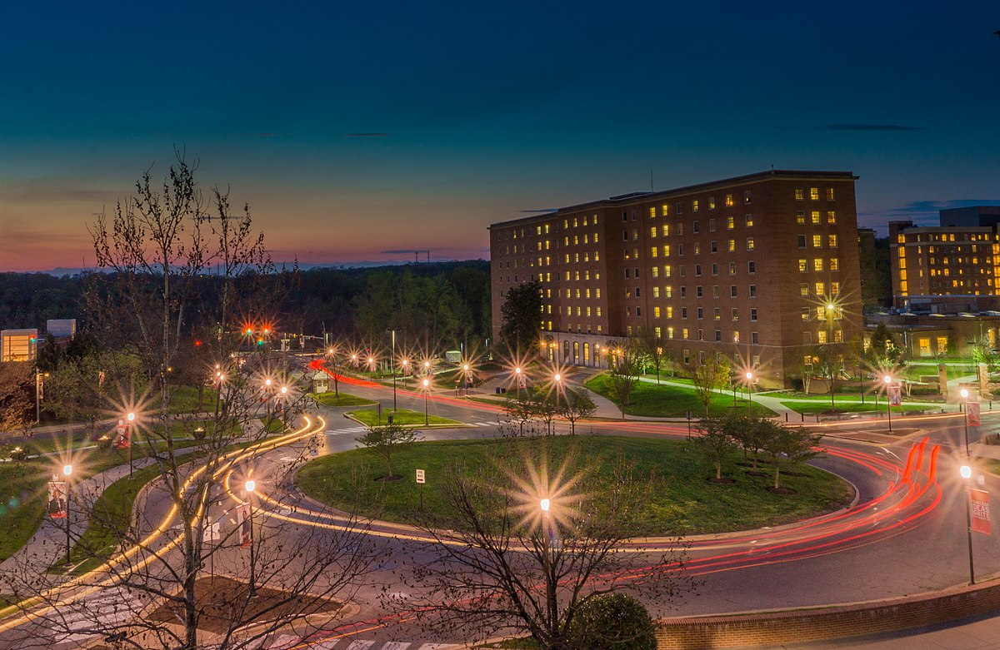
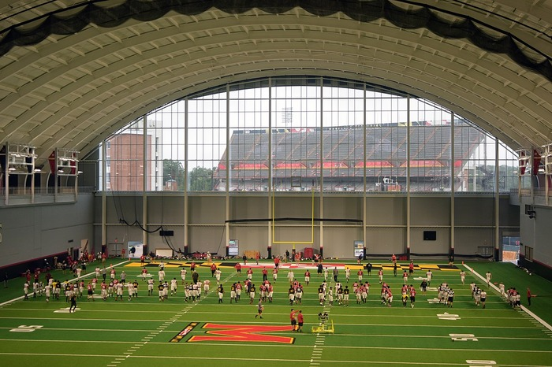

It’s no secret; football is where college athletic programs make their money.
According to a 2022 report, football brings in roughly $31.9 million per school each year, more than the next 35 sports combined. This is especially true at schools with dominant football programs, as evidenced by institutions like Alabama and Michigan leading the nation in athletic revenue each year.
The financial benefits of strong football programs have incentivized increased spending on the sport, sometimes to the detriment of, or at least outpacing, other ones. This is no different at the University of Maryland.
The shift to focusing more on football goes back to Maryland’s move to the Big Ten, a conference traditionally focused on the sport, in 2014 and has continued with the opening of a brand new training facility, Jones-Hill House, for the team.

The emphasis on football extends to an individual level, as well. According to former non-football athletes at the University of Maryland, student athletes at the University of Maryland are given access to a greater resource base on a day-to-day basis.
One area of disparity came in the form of access to food.
“I feel like we had to scratch and claw for food compared to football, who were given so much food they didn’t even eat all of it,” Joseph Ewan, a 2023 graduate of the UMD track team said.
Maxwell Myers, another 2023 graduate of the track team, echoed a similar sentiment.
“When we were training during pre-season, also typically when training is harder, we didn’t have access to much food and had to provide it ourselves.”
One of the things driving this disparity was the distribution of funds through RedCard, formerly known as TerpFuel. RedCard is an allowance granted to members of each varsity team to spend at restaurants in the area, essentially adding supplemental nutrition on top of whatever is available to the athletes already.
According to Ewan, football has much greater access to this fund than other teams like track do.
“When I got [to Maryland] we got $12 a week compared to football getting over $30 a day,” Ewan said.
According to Maryland football player and track athlete Tyler Baruch, football may get even more than Ewan thought. Baruch says that, on days without mandatory team breakfast and lunch, football players get $43 dollars of RedCard allowance ($14 for breakfast and lunch and $25 for dinner).
While the allotment for the track team did increase over Ewan’s years at Maryland, it was by a small amount; the RedCard allowance went from $12 per week to $15 per week.
“Having to fight for three dollars extra sounds like a scam,” Ewan said.
Myers also said that other teams at Maryland, outside of volleyball, basketball and football, get the same RedCard allotment as the track team.
Given the key role nutrition plays in athletic performance and recovery, the lack of access leaves non-football athletes at a disadvantage, especially relative to the resources available to the football team.
The difference in resources extended past food, as well. According to Ewan and Myers, track and other non-football athletic teams had limited facility access relative to the football team.
“Access to facilities often felt like a privilege rather than an availability for athletes,” Ewan said. “If football didn’t feel like sharing Jones-Hill House or ‘didn’t have time’ then we were out of luck.”
“Track only owns the literal track,” Myers added, “so any other facilities we used were shared with other sports or used after basketball and football.”
Along with having to acquiesce to football in terms of training space, non-football athletes were not always welcome in football facilities, at least in Ewan's experience.
“[Facility access rules] also created a space where if you were not a football athlete you were not supposed to be in certain buildings, and if you were caught they would put you out,” Ewan said.
To illustrate the emphasis put on football, it can be noted that Kehoe Track at Ludwig Field was dedicated in 1995 while Jones-Hill House opened in 2021. The football facilities are much newer, and have seen renovations and updates more recently.
While the argument can be made that the difference in funding is deserved due to the financial windfall that football represents for the university and the College Park community, it can seem an unfair process to some, especially other student-athletes.
At the very least, it is clear that football provides a much different student-athlete experience than other sports at the University of Maryland.